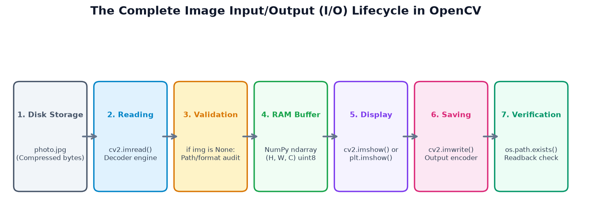
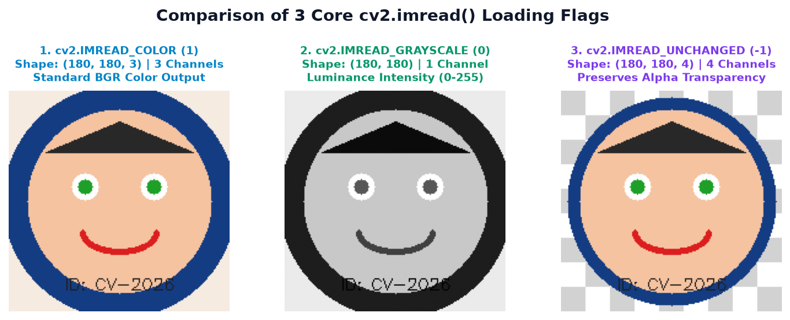
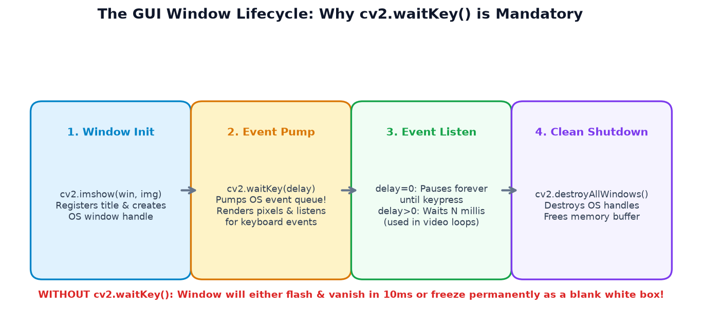
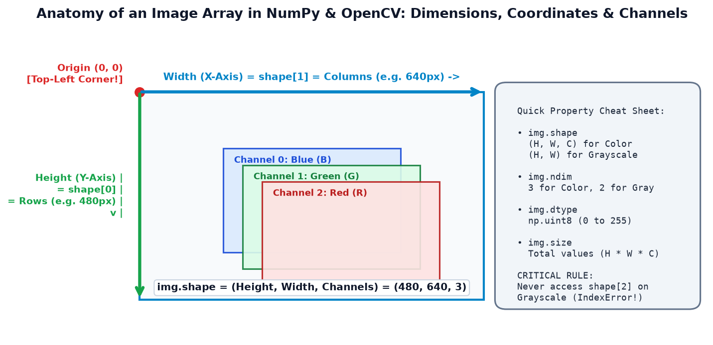
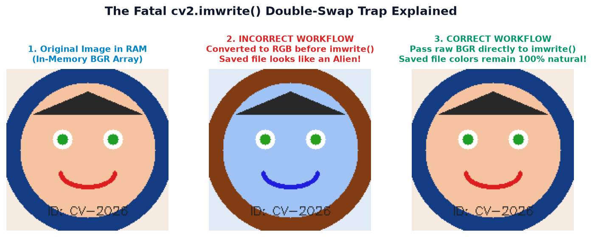
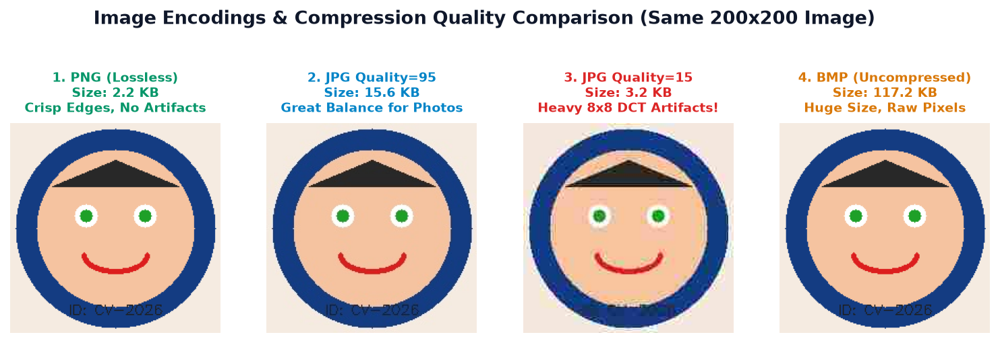
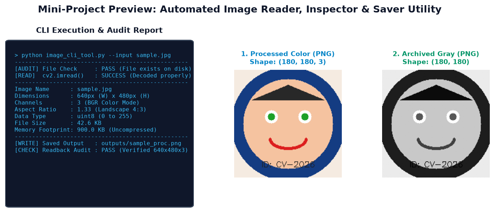
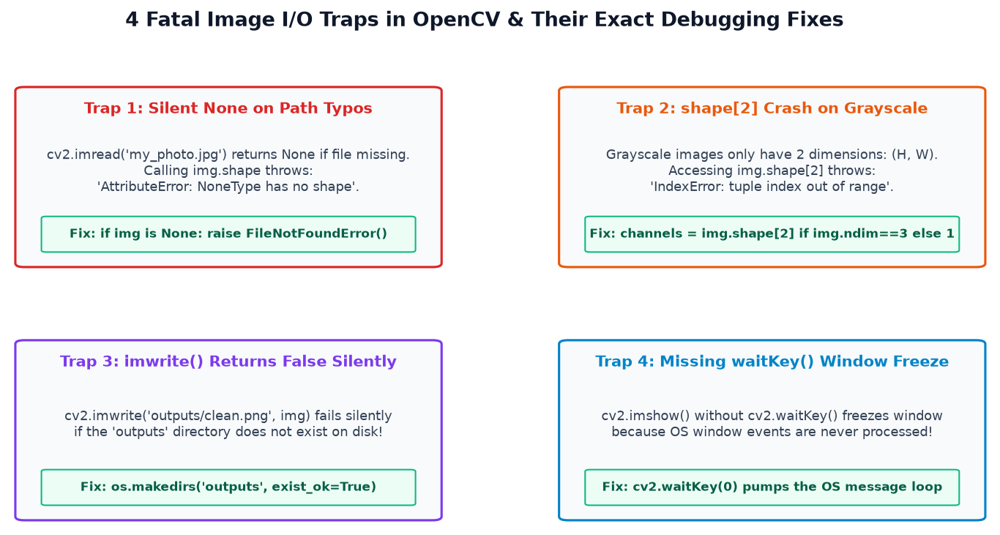

Computer Vision ka practical darwaza kholiye! Seekhiye images ko hard drive se RAM me load karna, GUI aur non-GUI tareeqon se display karna, BGR vs RGB ke double-swap trap se bachna, aur safe verification ke saath output files save karna.
Kisi bhi computer vision project ka sabse pehla aur aakhri step Image I/O (Input / Output) hota hai. Chahe aap self-driving car bana rahe hon ya college document scanner, aapko images ko disk se load karna hoga, screen par inspect karna hoga, aur processed result ko save karna hoga:
Hard drive par store compressed image file (jaise photo.jpg ya scan.png) ko decode karke RAM me ek numerical NumPy array me load karna. OpenCV me yeh kaam cv2.imread() karta hai.
Memory me stored pixel matrix ko monitor par graphical window ya notebook plot ke roop me dikhana taaki developer visually verify kar sake ki image sahi load hui hai ya nahi. Desktop scripts me cv2.imshow() aur notebooks me plt.imshow() use hota hai.
Memory me modified ya processed pixel values ko standard format (PNG, JPEG, WebP) me encode karke hard drive par new file create karna. OpenCV me yeh kaam cv2.imwrite() karta hai.

Real-Life College Scenario: Socho aapko apne college ID card ki photo upload karni hai. Aap id_card.jpg ko read karte hain, check karte hain ki photo blur toh nahi hai, dimensions audit karte hain, use crop/grayscale karte hain, aur id_card_processed.png ke roop me nayi file save karte hain taaki original photo bilkul safe rahe!
Image processing shuru karne se pehle in 20 fundamental concepts ko crystal-clear samajhna mandatory hai:
| # | Concept / Term | Simple Hinglish Meaning | Why It Matters in OpenCV | Common Beginner Trap |
|---|---|---|---|---|
| 1 | Image File | Hard drive par binary format me saved image data (e.g. .jpg, .png). |
Disk par compressed hoti hai; memory me uncompressed matrix banti hai. | File size (KB) aur RAM memory footprint ko ek samajhna. |
| 2 | File Path | Operating system me kisi file tak pahunchne ka physical address. | cv2.imread() ko image locate karne ke liye exact path chahiye. |
Path me typo hone par OpenCV silently None return karta hai. |
| 3 | Absolute Path | Drive root se complete address (e.g. C:/projects/assets/car.jpg). |
Kisi bhi directory se run karne par file mil jati hai. | Hard-coded absolute paths doosre computer par chalne par break ho jaate hain. |
| 4 | Relative Path | Current Working Directory ke reference se path (e.g. assets/car.jpg). |
Project ko portable banata hai (GitHub repo me best practice). | Script ko parent ya subfolder se run karne par file not found error aana. |
| 5 | Working Directory (CWD) | Wo folder jahan se terminal ne Python command execute ki hai (os.getcwd()). |
Relative paths CWD ke hisab se resolve hote hain, script folder ke nahi! | Script folder aur terminal folder alag hone par path failure. |
| 6 | Image Array | NumPy ndarray jo memory me har pixel ki value store karta hai. |
OpenCV image ko kisi custom object me nahi, direct NumPy array me rakhta hai. | Standard Python list samajh kar slow nested loops chalana. |
| 7 | Image Dimensions | Image ka vertical height (rows) aur horizontal width (columns). | NumPy (Height, Width) deta hai, lekin cv2.resize (Width, Height) maangta hai! |
Width aur Height ke order ko ulta pass karke image ko stretch kar dena. |
| 8 | Pixel | Digital screen ka sabse chhota single color dot (Picture Element). | Har pixel ek intensity number (0-255) ya 3 numbers ka tuple hota hai. | Pixels ko infinite continuous light wave samajhna. |
| 9 | Color Channel | Color image ka ek individual primary color component plane. | Standard color images me 3 channels hote hain (Blue, Green, Red). | Grayscale image me 3rd channel dhoondhna. |
| 10 | BGR | Blue-Green-Red channel ordering. | OpenCV ka default internal storage format BGR hai. | Matplotlib me direct BGR dikhane par face blue ho jana. |
| 11 | RGB | Red-Green-Blue channel ordering. | Web browsers, Matplotlib, CSS, aur mobile displays ka global standard. | BGR ko RGB me convert kiye bina Matplotlib me render karna. |
| 12 | Grayscale Image | Sirf brightness (luminance) store karne wali single-channel 2D matrix. | Processing speed 3x fast hoti hai aur 66% RAM bachti hai. | Grayscale image ke array par img.shape[2] access karke crash karna. |
| 13 | Image-Loading Flag | cv2.imread() ka 2nd argument jo decoding mode decide karta hai. |
Aap decide karte hain ki image color me chahiye, gray me ya raw unchanged. | Flag pass na karke default color load hone par surprise hona. |
| 14 | GUI Window | Operating system ka graphical popup window (X11 / Win32) image dikhane ke liye. | cv2.imshow() create karta hai desktop environments me. |
Cloud server / Docker me call karke crash kar dena. |
| 15 | File Extension | Filename ke peeche laga suffix (e.g. .jpg, .png). |
cv2.imwrite() extension dekh kar decide karta hai ki kaun sa encoder use karna hai! |
Bina extension ke file save karne par imwrite ka fail ho jana. |
| 16 | Image Encoding | Raw pixels ko compressed file format me convert karne ki mathematical technique. | PNG DEFLATE use karta hai, JPEG Discrete Cosine Transform (DCT). | Samajhna ki har format me exactly same file size aayega. |
| 17 | Image Compression | File size chhota karne ka process (Lossy vs. Lossless). | JPEG me details thodi degrade hoti hain (lossy), PNG me perfect rehti hain (lossless). | Medical scans ya barcodes ko low-quality JPEG me save karke ruin karna. |
| 18 | Output Directory | Wo folder jahan processed images save ki jati hain. | Directory pehle se disk par exist honi chahiye (os.makedirs). |
Non-existent folder path dene par cv2.imwrite silently False return karta hai. |
| 19 | None in Python | Python ka null value object. | Jab cv2.imread() image nahi dhoondh pata, toh wo exception throw karne ke bajaye None deta hai. |
None check lagaye bina agle step par img.shape call karke crash karna. |
| 20 | File Validation | Programmatic check confirm karne ke liye ki file sach me exist karti hai aur readable hai. | Production code me crashes aur memory corruption rokta hai. | Blind trust karke directly image process karna shuru kar dena. |
OpenCV me kisi bhi image ko read karne ka standard syntax yeh hai:
image = cv2.imread(filename, flags=cv2.IMREAD_COLOR)Parameters Breakdown:
filename (string ya Path): Disk par stored image ka path. Agar relative path hai, toh wo Current Working Directory ke hisab se resolve hota hai.flags (integer constant, optional): Yeh OpenCV ko batata hai ki image ko memory me kis format me decode karna hai. Agar aap koi flag pass nahi karte, toh default flag cv2.IMREAD_COLOR hota hai.
IMREAD_COLOR (3 channels), IMREAD_GRAYSCALE (1 channel 2D), and IMREAD_UNCHANGED (4 channels preserving Alpha transparency).
Core Flags Comparison Table:
| Flag Constant | Numeric Value | Loaded Shape | Channels | Alpha (Transparency) Behavior | Best Use Case |
|---|---|---|---|---|---|
cv2.IMREAD_COLOR |
1 |
(Height, Width, 3) |
3 (BGR) | Ignored / Stripped away! | Standard photographs, general vision tasks (Default). |
cv2.IMREAD_GRAYSCALE |
0 |
(Height, Width) |
1 (2D Matrix) | Ignored / Stripped away! | OCR preprocessing, edge detection, face detection. |
cv2.IMREAD_UNCHANGED |
-1 |
(Height, Width, 4) ya depth |
4 (BGRA) or 16-bit | Preserved! Full transparency kept. | Transparent PNG logos, medical 16-bit TIFF files. |
Agar aapne path me galat spelling likhi (jaise "car.jpgg"), ya file exist nahi karti, toh OpenCV error raise nahi karta! Yeh chup-chap None return karta hai. Agar aap agle line par print(image.shape) likhenge, toh Python crash ho jayega: AttributeError: 'NoneType' object has no attribute 'shape'. Isliye hamesha defensive check lagayein!
Aaiye dekhte hain production-grade code jo defensive checks ke saath images load karta hai:
Example A: Loading a Color Photograph
from pathlib import Path
import cv2
# Define path using pathlib for cross-platform safety
image_path = Path("coding/opencv/topic_3/assets/topic3_imread_flags_comparison.png")
# Step 1: Physical File Check
if not image_path.is_file():
print(f"Error: File does not exist at {image_path.resolve()}")
else:
# Step 2: Load Image in Color Mode
img_color = cv2.imread(str(image_path), cv2.IMREAD_COLOR)
# Step 3: Decode Validation
if img_color is None:
print("Error: File exists but OpenCV could not decode the image!")
else:
# Step 4: Inspect Dimensions
h, w, c = img_color.shape
print("=== IMAGE LOAD AUDIT REPORT ===")
print(f"Width : {w} pixels")
print(f"Height : {h} pixels")
print(f"Channels : {c} (BGR Format)")
print(f"NumPy Shape : {img_color.shape}")
print(f"Data Type : {img_color.dtype}")
print(f"Min Value : {img_color.min()} (Darkest pixel)")
print(f"Max Value : {img_color.max()} (Brightest pixel)")Actual Execution Output from Environment:
=== IMAGE LOAD AUDIT REPORT ===
Width : 1725 pixels
Height : 660 pixels
Channels : 3 (BGR Format)
NumPy Shape : (660, 1725, 3)
Data Type : uint8
Min Value : 0 (Darkest pixel)
Max Value : 255 (Brightest pixel)Example B: Loading the Same Image Directly as Grayscale
from pathlib import Path
import cv2
image_path = Path("coding/opencv/topic_3/assets/topic3_imread_flags_comparison.png")
# Load directly as Grayscale using flag 0
img_gray = cv2.imread(str(image_path), cv2.IMREAD_GRAYSCALE)
if img_gray is None:
raise FileNotFoundError(f"Could not load {image_path}")
# Notice: Grayscale images are 2D arrays!
h, w = img_gray.shape
channels = 1 # 2D arrays have exactly 1 channel
print("=== GRAYSCALE AUDIT ===")
print(f"Dimensions : {w}x{h}")
print(f"Channels : {channels} (Luminance Only)")
print(f"Shape : {img_gray.shape} -> Notice NO 3rd index!")
print(f"Array ndim : {img_gray.ndim} dimensions")Actual Output: Shape: (660, 1725) -> Notice NO 3rd index! Array ndim: 2 dimensions.
90% beginner bugs is galatfehmi se aate hain: "Mera image file script ke bagal me rakha hai, phir bhi FileNotFoundError kyu aa raha hai?"
Jab aap terminal me python my_folder/test.py run karte hain, toh Python ka relative path terminal ke current folder (CWD) se calculate hota hai, na ki script ke folder se! Agar terminal root me hai, toh cv2.imread("car.jpg") root me car.jpg dhoondhega, my_folder/car.jpg me nahi!
Path Troubleshooting Matrix:
\) use hota hai (jaise C:\\data\\new_photo.jpg). Lekin Python me \n ka matlab newline aur \t ka matlab tab hota hai! Isliye path string corrupt ho jati hai. Hamesha forward slash (/) ya raw string r"C:/data/photo.jpg" use karein.pathlib.Path?: pathlib.Path modern Python ka object-oriented path tool hai. Yeh Windows, Mac, aur Linux ke slash differences ko internally handle karta hai aur / operator se clean paths banata hai.str(path) is passed to OpenCV?: Older versions of OpenCV pure C++ bindings use karti thi jo sirf string paths accept karti thi. Newer OpenCV (4.x+) Path objects accept karta hai, lekin str(path) likhna universal backward-compatibility guarantee karta hai!import os
from pathlib import Path
import cv2
# Method 1: Resolve relative to the SCRIPT itself (Never breaks!)
script_dir = Path(__file__).resolve().parent
image_path = script_dir / "assets" / "sample.jpg"
print("Script Directory:", script_dir)
print("Resolved Target :", image_path)
if not image_path.is_file():
print("Warning: Image not found at script-relative path!")
else:
img = cv2.imread(str(image_path))
print("Successfully loaded via bulletproof script path!")Agar aap local computer (laptop/desktop with monitor) par Python script chala rahe hain, toh OpenCV ek fast graphical popup window provide karta hai:
import cv2
# 1. Load image
img = cv2.imread("coding/opencv/topic_3/assets/topic3_imread_flags_comparison.png")
if img is None:
raise FileNotFoundError("Image path invalid!")
# 2. Display in named GUI window
cv2.imshow("Student Verification Window", img)
# 3. Wait indefinitely until user presses ANY key
cv2.waitKey(0)
# 4. Cleanly destroy all opened OS windows
cv2.destroyAllWindows()Function Syntax: cv2.imshow(winname, mat)
winname: Window ke top title bar par dikhne wala text string. Agar aap do alag cv2.imshow() calls me same window name pass karenge, toh naya image usi puraani window me replace ho jayega!mat: Display karne ke liye NumPy array (image). OpenCV expects this array in BGR order for color images!
cv2.imshow() opens the OS window handle, but cv2.waitKey() is the engine that pumps the OS message loop. cv2.destroyAllWindows() cleanly releases the memory buffer.
Agar aap cv2.imshow() ke baad cv2.waitKey() nahi likhte, toh window screen par aate hi 1 millisecond me gayab ho jayegi ya pure safed (frozen white box) bankar atki rahegi! Aisa kyu hota hai?
Why cv2.waitKey() is Mandatory:
Operating systems (Windows, macOS, Linux) me har graphical window ko render hone ke liye ek Event Message Loop chalana padta hai. cv2.imshow() sirf image ko draw buffer me bhejta hai; jab aap cv2.waitKey() call karte hain, tab OpenCV actual pixels ko monitor par render karta hai aur mouse clicks/keyboard strokes ko process karta hai!
waitKey(0) vs. waitKey(delay):
cv2.waitKey(0): Value 0 ka matlab infinite wait hai. Program tab tak pause rahega jab tak keyboard ka koi button press na ho. Images inspect karne ke liye yeh standard choice hai.cv2.waitKey(30): Value 30 ka matlab 30 milliseconds wait karna hai. Agar 30ms me koi key press nahi hui, toh program aage badh jata hai. Live camera streams aur video playback ke liye yeh use hota hai (approx 30 FPS).Cross-Platform Keycode Handling (& 0xFF):
Windows 32-bit integer keycodes return karta hai jabki Linux/Unix 8-bit ASCII. Isliye robust code me bitwise mask & 0xFF use kiya jata hai:
# 'q' key dabane par window close karne ka industry-standard pattern
key = cv2.waitKey(0) & 0xFF
if key == ord('q'):
print("User pressed 'q' -> Exiting gracefully.")
cv2.destroyAllWindows()Agar aap Jupyter Notebook, Google Colab, cloud server (AWS/GCP), Docker container ya CodeVerse educational app ke andar code run kar rahe hain, toh wahan physical desktop monitor nahi hota. Aise environments me cv2.imshow() crash kar deta hai:
cv2.error: OpenCV(4.x) :-2: The function is not implemented. Rebuild with GUI support...The Solution: Use Matplotlib for In-Notebook & Web Display
Matplotlib images ko GUI window ke bajaye inline HTML canvas par render karta hai. Bas ek zaroori rule yaad rakhein: OpenCV BGR me load karta hai, Matplotlib RGB expect karta hai!
import cv2
import matplotlib.pyplot as plt
# 1. Load image (BGR format)
img_bgr = cv2.imread("coding/opencv/topic_3/assets/topic3_imread_flags_comparison.png")
# 2. Mandatory: Convert BGR to RGB for correct colors in Matplotlib!
img_rgb = cv2.cvtColor(img_bgr, cv2.COLOR_BGR2RGB)
# 3. Also load a grayscale version
img_gray = cv2.cvtColor(img_bgr, cv2.COLOR_BGR2GRAY)
# 4. Display side-by-side using Subplots
plt.figure(figsize=(10, 4))
plt.subplot(1, 2, 1)
plt.imshow(img_rgb)
plt.title("Color Image (RGB Converted)")
plt.axis('off')
plt.subplot(1, 2, 2)
# In Matplotlib, ALWAYS pass cmap='gray' for grayscale images!
plt.imshow(img_gray, cmap='gray')
plt.title("Grayscale (1 Channel)")
plt.axis('off')
plt.tight_layout()
plt.show()In-memory pixel array ko disk par file bana kar save karne ke liye cv2.imwrite() use hota hai:
success = cv2.imwrite(filename, image, params=[])Core Rules for Safe Image Saving:
cv2.imwrite() ek boolean return karta hai (True ya False). Agar disk full hai, permissions nahi hain, ya destination directory missing hai, toh yeh False return karta hai bina koi exception throw kiye!os.makedirs() ya Path.mkdir(parents=True, exist_ok=True) call karein."out.jpg" likhenge, OpenCV JPEG compression lagayega. Agar "out.png" likhenge, PNG lossless encoder lagayega.outputs/ folder me save karein.Example: Saving with Quality Control & Readback Verification
from pathlib import Path
import cv2
# Define safe output directory
output_dir = Path("my_saved_outputs")
output_dir.mkdir(parents=True, exist_ok=True)
# Load input
src_path = Path("coding/opencv/topic_3/assets/topic3_imread_flags_comparison.png")
img = cv2.imread(str(src_path))
if img is None:
raise FileNotFoundError("Source image missing!")
# Save Example A: High Quality JPEG (Quality = 95)
jpg_out = output_dir / "verified_photo.jpg"
success_jpg = cv2.imwrite(str(jpg_out), img, [cv2.IMWRITE_JPEG_QUALITY, 95])
# Save Example B: Lossless PNG (Compression level = 9)
png_out = output_dir / "verified_photo.png"
success_png = cv2.imwrite(str(png_out), img, [cv2.IMWRITE_PNG_COMPRESSION, 9])
# Save Example C: Grayscale Scan
gray = cv2.cvtColor(img, cv2.COLOR_BGR2GRAY)
gray_out = output_dir / "verified_photo_gray.png"
success_gray = cv2.imwrite(str(gray_out), gray)
# Verification Step: Readback Audit
print(f"JPEG Write Success : {success_jpg} | File size: {jpg_out.stat().st_size} bytes")
print(f"PNG Write Success : {success_png} | File size: {png_out.stat().st_size} bytes")
print(f"Gray Write Success : {success_gray} | File size: {gray_out.stat().st_size} bytes")
# Confirm files can be read back cleanly
reloaded = cv2.imread(str(png_out))
assert reloaded is not None and reloaded.shape == img.shape
print("[AUDIT PASS] Saved file successfully verified on disk!")
Digital images ko program karte waqt in 5 NumPy attributes ko deeply understand karein:
| Property | Color Image (BGR) | Grayscale Image | What It Means |
|---|---|---|---|
img.shape |
(Height, Width, 3) |
(Height, Width) |
Tuple of array dimensions. Note that 3rd index is absent in Grayscale! |
img.ndim |
3 |
2 |
Array ke total dimensions (Color = 3D tensor, Gray = 2D matrix). |
img.dtype |
uint8 |
uint8 |
Unsigned 8-bit integer (har pixel ki value 0 se 255 ke beech hoti hai). |
img.size |
$H imes W imes 3$ | $H imes W$ | Array me total number of numerical values (bytes). |
img.shape[0] |
Height (Rows) |
Height (Rows) |
Vertical pixel count. |
img.shape[1] |
Width (Columns) |
Width (Columns) |
Horizontal pixel count. |
img.shape[2] |
3 (Channels) |
CRASH! IndexError |
Number of color channels. Never call on Grayscale! |
The Safe Channel Extractor Pattern:
def get_image_dimensions(img):
# Safely extracts height, width and channel count for ANY image
h, w = img.shape[:2] # Always safely unpacks first 2 elements
channels = img.shape[2] if img.ndim == 3 else 1
return h, w, channels
# Test with color and grayscale
h_c, w_c, ch_c = get_image_dimensions(img_color)
h_g, w_g, ch_g = get_image_dimensions(img_gray)
print(f"Color Image : {w_c}x{h_c} with {ch_c} channels")
print(f"Gray Image : {w_g}x{h_g} with {ch_g} channel")Bohot se students pehle Matplotlib me display karne ke liye image ko RGB me convert karte hain: rgb = cv2.cvtColor(bgr, cv2.COLOR_BGR2RGB). Phir galti se wahi rgb variable cv2.imwrite("output.png", rgb) me pass kar dete hain! Natija? Saved image me chehra neela ho jata hai!

cv2.imwrite() always assumes its input array is in BGR format. If you pass an already converted RGB array, it swaps Red and Blue again, corrupting the colors in the saved file.
The Golden Rule:
cv2.imread): OpenCV array ko BGR me load karta hai.cv2.imwrite): Hamesha original BGR array pass karein!OpenCV alag-alag file formats ko decode aur encode karne ke liye native system libraries (libjpeg, libpng, libtiff, libwebp) use karta hai. Har format ka ek specific purpose hota hai:

| Format | Compression Type | Alpha Support | Typical Size | Best Used For | OpenCV Parameter |
|---|---|---|---|---|---|
PNG (.png) |
Lossless (DEFLATE) | Yes (4 channels) | Medium / Variable | Logos, diagrams, screenshots, medical scans, documents | cv2.IMWRITE_PNG_COMPRESSION (0 to 9, default 3) |
JPEG (.jpg, .jpeg) |
Lossy (DCT) | No (3 channels only) | Small / Compact | Real-world camera photographs, datasets | cv2.IMWRITE_JPEG_QUALITY (0 to 100, default 95) |
WebP (.webp) |
Both Lossy & Lossless | Yes | Very Small (30% smaller than JPG) | Modern web development, mobile apps | cv2.IMWRITE_WEBP_QUALITY (1 to 100) |
BMP (.bmp) |
Uncompressed | Optional | Very Large (Raw) | Legacy hardware, benchmark tests | None |
1. College ID Photo Dimension & Aspect Ratio Verifier
Problem: Exam portal sirf 1:1 aspect ratio (square) ya 4:3 ratio wali photos accept karta hai. Agar student ne galat aspect ratio upload kiya toh portal reject kar deta hai.
from pathlib import Path
import cv2
def verify_student_photo(photo_path, expected_aspect=1.33, tolerance=0.1):
path_obj = Path(photo_path)
if not path_obj.is_file():
return False, f"File not found: {photo_path}"
img = cv2.imread(str(path_obj))
if img is None:
return False, "File is not a valid or readable image format."
h, w = img.shape[:2]
actual_aspect = round(w / h, 2)
is_valid = abs(actual_aspect - expected_aspect) <= tolerance
msg = f"Resolution: {w}x{h} | Aspect Ratio: {actual_aspect} (Expected: {expected_aspect})"
return is_valid, msg
# Run verification
valid, report = verify_student_photo("coding/opencv/topic_3/assets/topic3_imread_flags_comparison.png", expected_aspect=2.61)
print(f"Status: {'APPROVED' if valid else 'REJECTED'} -> {report}")2. Document Preview & Grayscale Archiver
Problem: College office me scanned fee receipts ko 80% disk space bachane ke liye automatic grayscale me convert karke archive folder me save karna.
from pathlib import Path
import cv2
def archive_receipt(input_path, archive_folder):
archive_dir = Path(archive_folder)
archive_dir.mkdir(parents=True, exist_ok=True)
# Load color original
img = cv2.imread(str(input_path))
if img is None:
raise ValueError(f"Could not load {input_path}")
# Convert to grayscale
gray = cv2.cvtColor(img, cv2.COLOR_BGR2GRAY)
# Save optimized copy
output_filename = f"{Path(input_path).stem}_archived.png"
target_path = archive_dir / output_filename
success = cv2.imwrite(str(target_path), gray)
if not success or not target_path.is_file():
raise RuntimeError("Archive write failed!")
print(f"Successfully archived: {target_path} ({target_path.stat().st_size} bytes)")
archive_receipt("coding/opencv/topic_3/assets/topic3_imread_flags_comparison.png", "college_archives")3. E-Commerce Product Image Resizer (Aspect-Ratio Safe)
Problem: E-commerce platform par product photos ko 200px thumbnail me resize karna bina image ko stretch ya distort kiye.
from pathlib import Path
import cv2
def create_product_thumbnail(img_path, out_path, max_dim=200):
img = cv2.imread(str(img_path))
if img is None:
return False
h, w = img.shape[:2]
# Calculate scale factor to maintain exact aspect ratio
scale = max_dim / max(h, w)
new_w, new_h = int(w * scale), int(h * scale)
# Notice: cv2.resize takes (width, height)!
resized = cv2.resize(img, (new_w, new_h), interpolation=cv2.INTER_AREA)
Path(out_path).parent.mkdir(parents=True, exist_ok=True)
cv2.imwrite(str(out_path), resized, [cv2.IMWRITE_JPEG_QUALITY, 85])
print(f"Thumbnail created: {new_w}x{new_h} at {out_path}")
return True
create_product_thumbnail("coding/opencv/topic_3/assets/topic3_imread_flags_comparison.png", "thumbs/product_thumb.jpg")4. Batch Image Archive Auditor (Integrity Scan)
Problem: Folder me 100 images hain jinme se kuch corrupt ya missing hain. Ek audit script jo har file ko check karke report generate kare.
from pathlib import Path
import cv2
def audit_image_folder(folder_path):
p = Path(folder_path)
report = []
for f in p.glob("*.*"):
if f.suffix.lower() not in [".jpg", ".jpeg", ".png", ".webp", ".bmp"]:
continue
img = cv2.imread(str(f))
if img is None:
report.append((f.name, "CORRUPT_OR_UNREADABLE", None))
else:
h, w = img.shape[:2]
c = img.shape[2] if img.ndim == 3 else 1
report.append((f.name, "HEALTHY", f"{w}x{h} ({c}ch)"))
print(f"=== BATCH AUDIT FOR '{folder_path}' ===")
for name, status, dims in report:
print(f" {name:<30}: {status:<22} {dims or ''}")
audit_image_folder("coding/opencv/topic_3/assets")Aaiye ek complete, production-grade CLI tool banayein jo defensive file validation, metadata extraction, dual-format export, aur readback verification provide karta hai:

import os
from pathlib import Path
import cv2
class ImageIOUtility:
# Production utility for reading, inspecting, and saving images safely
def __init__(self, input_filepath):
self.input_path = Path(input_filepath)
self.image = None
self.metadata = {}
def load(self, mode="color"):
# Loads image with comprehensive path and decode auditing
# 1. Physical existence check
if not self.input_path.is_file():
return False, f"Error: File does not exist: {self.input_path.resolve()}"
# 2. Select flag
flag = cv2.IMREAD_COLOR if mode == "color" else cv2.IMREAD_GRAYSCALE
self.image = cv2.imread(str(self.input_path), flag)
# 3. Decode validation
if self.image is None:
return False, f"Error: OpenCV failed to decode: {self.input_path.resolve()}"
# 4. Extract rich metadata
h, w = self.image.shape[:2]
c = self.image.shape[2] if self.image.ndim == 3 else 1
self.metadata = {
"filename": self.input_path.name,
"width": w,
"height": h,
"channels": c,
"aspect_ratio": round(w / h, 2),
"dtype": str(self.image.dtype),
"file_size_kb": round(self.input_path.stat().st_size / 1024, 2),
"uncompressed_ram_kb": round(self.image.nbytes / 1024, 2)
}
return True, "Loaded successfully"
def display_metadata(self):
# Prints a clean tabular audit report
print("\n" + "="*50)
print(f"IMAGE METADATA REPORT: {self.metadata.get('filename')}")
print("="*50)
for key, val in self.metadata.items():
print(f" {key.replace('_', ' ').title():<22}: {val}")
print("="*50)
def save(self, output_directory, output_filename=None, quality=95):
# Saves image with directory auto-creation and readback verification
if self.image is None:
return False, "Error: No image loaded in memory to save."
out_dir = Path(output_directory)
out_dir.mkdir(parents=True, exist_ok=True)
target_name = output_filename or f"processed_{self.input_path.name}"
target_path = out_dir / target_name
# Quality parameters
params = []
if target_path.suffix.lower() in [".jpg", ".jpeg"]:
params = [cv2.IMWRITE_JPEG_QUALITY, quality]
# Write to disk
write_status = cv2.imwrite(str(target_path), self.image, params)
if not write_status or not target_path.is_file():
return False, f"Error: Could not write file to {target_path}"
# Readback verification
readback = cv2.imread(str(target_path))
if readback is None:
return False, "Error: Saved file corrupted; readback audit failed."
return True, f"Success: Saved & verified at {target_path.resolve()}"
# ==============================================================================
# Execution & Verification Test
# ==============================================================================
if __name__ == "__main__":
sample_file = "coding/opencv/topic_3/assets/topic3_imread_flags_comparison.png"
# Test 1: Valid File
tool = ImageIOUtility(sample_file)
success, msg = tool.load(mode="color")
if success:
tool.display_metadata()
saved, save_msg = tool.save("outputs/mini_project", "final_id_card.png")
print(save_msg)
# Test 2: Intentionally Missing File (Defensive Test)
tool_bad = ImageIOUtility("non_existent_dummy_photo.jpg")
success_bad, msg_bad = tool_bad.load()
print("\nDefensive Test Result (Missing File):", msg_bad)
shape[2] crashes, missing output folders, and frozen GUI windows.
| # | Error Symptom / Exception | Root Cause | How to Diagnose | Exact Fix Code |
|---|---|---|---|---|
| 1 | AttributeError: 'NoneType' object has no attribute 'shape' |
cv2.imread() ko galat file path mila. File missing hai ya name me typo hai. |
print(img is None) |
if img is None: raise FileNotFoundError() |
| 2 | FileNotFoundError relative path dene par |
Terminal ka Current Working Directory (CWD) script ke folder se match nahi karta. | import os; print(os.getcwd()) |
Path(__file__).parent / "assets/img.jpg" |
| 3 | Windows path me \n ya \t escape bug |
Windows backslash ko Python escape character samajhta hai (e.g. "C:\\notes\\test.jpg"). |
Path print karne par broken characters dikhna | Use forward slash "C:/notes/test.jpg" or r"C:/notes/test.jpg" |
| 4 | File exists but cv2.imread() returns None |
File corrupted hai, 0 bytes ki empty file hai, ya unsupported format hai. | os.path.getsize(path) == 0 |
Verify file integrity before loading |
| 5 | cv2.error: (-2) The function is not implemented (cv2.imshow) |
Headless server (Docker, Colab, Linux VM) me display monitor nahi hai. | Check environment type | Use Matplotlib plt.imshow() or cv2.imwrite() |
| 6 | Window opens and disappears in 1 millisecond | cv2.imshow() ke baad cv2.waitKey() call nahi kiya gaya. |
GUI window flashes and closes | Add cv2.waitKey(0) right after imshow |
| 7 | Window freezes permanently as a white/blank box | time.sleep() use kiya gaya cv2.waitKey() ke bajaye. |
Window title says "Not Responding" | Never use time.sleep(); use cv2.waitKey(30) |
| 8 | cv2.imwrite() returns False |
Destination output folder disk par exist nahi karta. | File missing in folder | os.makedirs(out_dir, exist_ok=True) |
| 9 | Saved image has alien/blue faces | Matplotlib ke liye convert kiye gaye RGB array ko cv2.imwrite() me pass kar diya. |
Red and Blue swapped in saved file | Always pass raw original BGR array to imwrite() |
| 10 | IndexError: tuple index out of range on img.shape[2] |
Image Grayscale mode me load hui hai jo 2D matrix (H, W) hoti hai. |
Check img.ndim == 2 |
channels = img.shape[2] if img.ndim==3 else 1 |
| 11 | imwrite fails without error message |
Filename me extension missing hai (e.g. cv2.imwrite("output", img)). |
OpenCV cannot pick encoder | Specify valid extension: "output.png" |
| 12 | Accidental overwrite of original dataset | Output path me input path hi pass kar diya gaya. | Original raw file permanently modified | Always write to separate outputs/ directory |
| 13 | Heavy blocky artifacts in saved photograph | JPEG quality parameter bohot kam set kar diya gaya (e.g. quality=10). |
8x8 DCT grid visible in zoom | Set quality to 90 or 95 |
| 14 | Transparent PNG loaded with black background | cv2.imread() default IMREAD_COLOR flag use kiya jisse alpha channel strip ho gaya. |
Shape has 3 channels instead of 4 | Use cv2.imread(path, cv2.IMREAD_UNCHANGED) |
None return karta hai, isliye defensive if img is None check mandatory hota hai.
cv2.IMREAD_COLOR (integer value 1) default flag hota hai jo 3-channel BGR format me image load karta hai.
(Rows, Columns, Channels) yaani (Height, Width, Channels) hote hain: (600, 800, 3).
0 infinite wait signify karta hai jab tak koi keyboard event trigger na ho.
cv2.imwrite() boolean (True on success, False on failure) return karta hai.
(H, W) hota hai; index 2 exist nahi karta!
cv2.IMREAD_UNCHANGED (numeric constant -1) alpha channel aur raw bit depth ko preserve karta hai.
[cv2.IMWRITE_JPEG_QUALITY, 90].
cv2.COLOR_BGR2RGB conversion mandatory hai.
cv2.imwrite() input ko BGR manta hai; agar aap RGB pass karenge toh wo dobara swap kar dega!
cv2.imread() use uncompress karke har pixel ke actual numbers (0-255) ki uncompressed (H, W, C) NumPy matrix bana deta hai. Ek 50 KB ki JPEG photo RAM me 2.5 MB ki array ban sakti hai!
cv2.imshow() sirf OS window handle create karta hai aur pixel buffer assign karta hai. Actual window drawing, screen refreshing, aur keyboard/mouse event listener loop cv2.waitKey() ke andar run hota hai. Iske bina OS window freeze ho jati hai ya turant close ho jati hai.
None return karta hai aur developer par check lagane ki responsibility chhodta hai.
# Buggy Code:
img = cv2.imread("assets/student_id.jpg")
print("Height:", img.shape[0]) # Crash: AttributeError: 'NoneType' object has no attribute 'shape'None return kiya. Fix: Hamesha defensive check lagayein:if img is None: raise FileNotFoundError("Cannot find student_id.jpg")
# Buggy Code:
img = cv2.imread("doc.png", cv2.IMREAD_GRAYSCALE)
h, w, c = img.shape # Crash: ValueError: not enough values to unpack (expected 3, got 2)(H, W) hota hai. 3 variables me unpack nahi kar sakte. Fix:h, w = img.shape[:2]; c = img.shape[2] if img.ndim == 3 else 1
# Buggy Code:
canvas = np.zeros((200, 200, 3), dtype=np.uint8)
status = cv2.imwrite("final_reports/output.png", canvas)
print("Saved:", status) # Prints: Saved: False! File not created!final_reports folder disk par exist nahi karta. OpenCV parent directories auto-create nahi karta. Fix:os.makedirs("final_reports", exist_ok=True); cv2.imwrite("final_reports/output.png", canvas)
# Buggy Code:
img = cv2.imread("photo.jpg") # BGR
rgb = cv2.cvtColor(img, cv2.COLOR_BGR2RGB) # converted for matplotlib
cv2.imwrite("photo_saved.jpg", rgb) # Saved file has blue face!cv2.imwrite() input ko BGR expect karta hai. RGB pass karne par usne dobara Red aur Blue swap kar diya. Fix:cv2.imwrite("photo_saved.jpg", img)
# Buggy Code:
import cv2, time
img = cv2.imread("photo.jpg")
cv2.imshow("Preview", img)
time.sleep(5) # Window shows "Not Responding" and stays white!
cv2.destroyAllWindows()time.sleep() thread ko freeze karta hai lekin OS window message loop pump nahi karta. Fix:time.sleep(5) ki jagah cv2.waitKey(5000) use karein jo OS events ko continuously pump karta hai.
cv2.imread() ke baad hamesha if img is None: check lagana seekh liya.IMREAD_COLOR (1), IMREAD_GRAYSCALE (0), aur IMREAD_UNCHANGED (-1) ka difference clear hai.img.shape (Height, Width, Channels) deta hai, jabki cv2.resize() (Width, Height) maangta hai.cv2.imshow() ke saath cv2.waitKey() lagana kyu mandatory hai wo samajh liya.cv2.imwrite() call karne se pehle destination directory create karna aur return value check karna master kar liya.